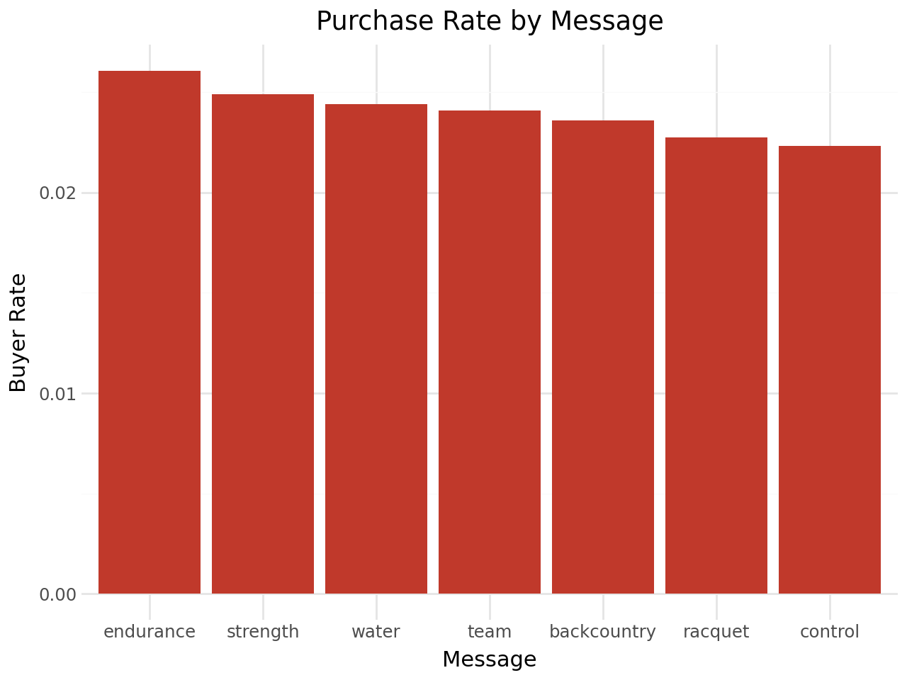
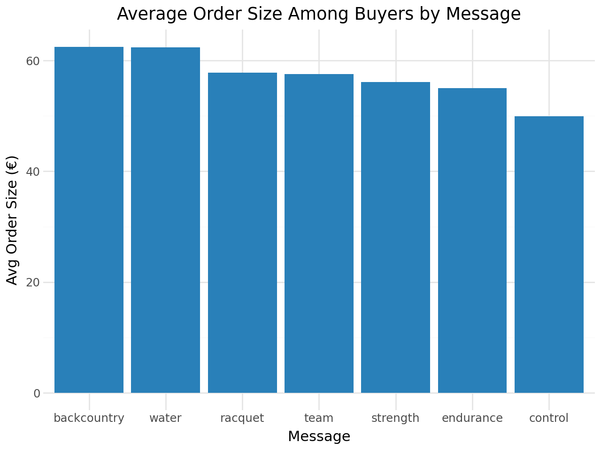
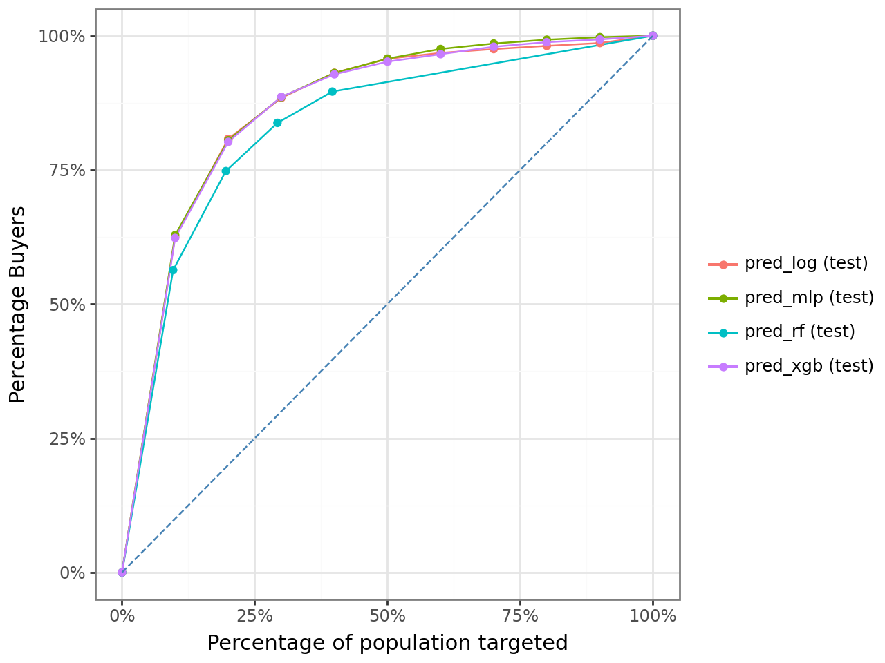
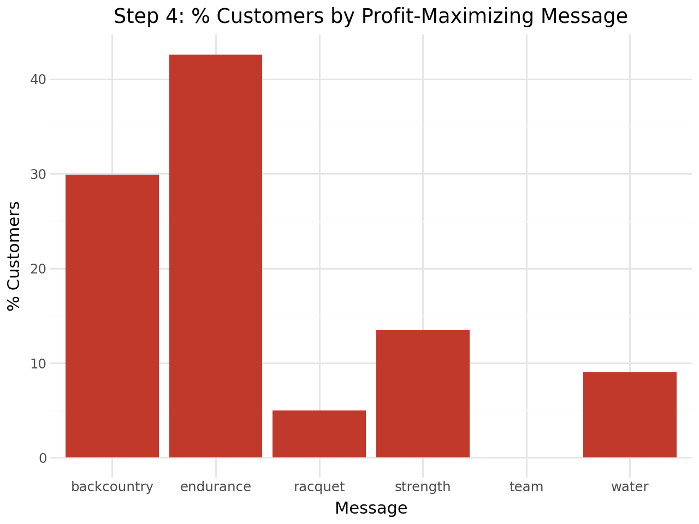

Pentathlon – Customer-Level Marketing Optimization
Pentathlon is a European sporting goods retailer that sends promotional messages across 7 product departments. The business question is deceptively simple: which message should each customer receive? With 600K customer records and 7 options per customer, brute-force one-size-fits-all targeting leaves significant profit on the table. This project builds a personalized scoring engine to maximize expected profit at the individual customer level.
Data
The dataset contains 600,000 customer-message observations — each row represents one customer assigned to one of 7 promotional messages in a randomized experiment.
pentathlon_nptb = pl.read_parquet("data/pentathlon_nptb.parquet")
pentathlon_nptb.head()shape: (5, 16)
┌────────┬───────┬──────────┬─────────────┬───┬───────────┬──────────────┬──────────────┬──────────┐
│ custid ┆ buyer ┆ total_os ┆ message ┆ … ┆ freq_team ┆ freq_backcou ┆ freq_racquet ┆ training │
╞════════╪═══════╪══════════╪═════════════╪═══╪═══════════╪══════════════╪══════════════╪══════════╡
│ U1 ┆ no ┆ 0 ┆ team ┆ … ┆ 4 ┆ 0 ┆ 1 ┆ 1.0 │
│ U3 ┆ no ┆ 0 ┆ backcountry ┆ … ┆ 1 ┆ 0 ┆ 0 ┆ 1.0 │
└────────┴───────┴──────────┴─────────────┴───┴───────────┴──────────────┴──────────────┴──────────┘print(f"Shape: {pentathlon_nptb.shape[0]:,} rows × {pentathlon_nptb.shape[1]} columns")
# Message levels (7): endurance, strength, water, team, backcountry, racquet, control
# Train: 420,000 (70%) | Test: 180,000 (30%)
# Features (11): age, female, income, education, children,
# freq_endurance, freq_strength, freq_water,
# freq_team, freq_backcountry, freq_racquetShape: 600,000 rows × 16 columns
Message levels (7): ['backcountry', 'control', 'endurance', 'racquet', 'strength', 'team', 'water']
Train: 420,000 (70.0%) | Test: 180,000 (30.0%)The experiment was properly randomized — each customer was assigned a message at random, so we can treat observed purchase outcomes as causal estimates of message effectiveness.
Exploratory Data Analysis
Purchase Rate by Message
We first look at how conversion rates vary across messages to understand whether personalization is even worth pursuing.
buyer_rate = (
pentathlon_nptb
.group_by("message")
.agg(pl.col("buyer01").mean().alias("buyer_rate"))
.sort("buyer_rate", descending=True)
)
(ggplot(buyer_rate.to_pandas(), aes(x="message", y="buyer_rate"))
+ geom_col(fill="#c0392b")
+ labs(title="Purchase Rate by Message", x="Message", y="Buyer Rate")
+ theme_minimal())
endurance drives the highest conversion rate, while control (no message) is lowest. The variation across messages is meaningful — this alone justifies personalized assignment over a single blanket strategy.
Average Order Size Among Buyers
Conversion rate is only half the picture. We also need to know how much buyers spend.
avg_os = (
pentathlon_nptb.filter(pl.col("buyer") == "yes")
.group_by("message")
.agg(pl.col("total_os").mean().alias("avg_order_size"))
.sort("avg_order_size", descending=True)
)
The ranking completely reverses for order size: backcountry and water buyers spend ~€63 on average, while endurance buyers spend only ~€55. This is the core insight motivating a two-part model — a message can drive high conversion but low basket size, or vice versa. Optimizing on either metric alone will miss the profit-maximizing combination.
Two-Part Modeling Framework
Expected profit per customer-message pair requires two models working in sequence:
\[\text{Expected Profit} = \hat{P}(\text{buy} \mid \text{message, customer}) \times \hat{E}(\text{order size} \mid \text{buyer, message, customer}) - \text{cost}\]
| Part | Task | Label | Training Set |
|---|---|---|---|
| Part 1 | Will the customer buy? | buyer (yes/no) |
All 420K train rows |
| Part 2 | How much will they spend? | total_os |
10,080 buyers only |
Part 1: Buyer Classification
We trained and cross-validated four classifiers. The logistic regression baseline helps anchor expectations:
clf_log = logistic(
data={"train": train_df},
rvar="buyer", lev="yes",
evar=evar_buyer, # age, income, education, purchase frequencies + message
)
clf_log.summary()Logistic regression (GLM)
Response variable : buyer | Level: yes
Explanatory variables: age, female, income, education, children,
freq_endurance, freq_strength, freq_water,
freq_team, freq_backcountry, freq_racquet, message
┌──────────────────────┬───────┬────────┬─────────────┬───────────┬──────────┬─────────┬─────┐
│ index ┆ OR ┆ OR% ┆ coefficient ┆ std.error ┆ z.value ┆ p.value ┆ │
╞══════════════════════╪═══════╪════════╪═════════════╪═══════════╪══════════╪═════════╪═════╡
│ Intercept ┆ 0.001 ┆ -99.9% ┆ -7.077 ┆ 0.055 ┆ -127.863 ┆ < .001 ┆ *** │
│ age[45 to 59] ┆ 0.916 ┆ -8.4% ┆ -0.088 ┆ 0.026 ┆ -3.38 ┆ < .001 ┆ *** │
│ income ┆ 1.002 ┆ +0.2% ┆ 0.002 ┆ 0.000 ┆ 5.21 ┆ < .001 ┆ *** │
│ freq_endurance ┆ 1.187 ┆ +18.7% ┆ 0.171 ┆ 0.006 ┆ 27.94 ┆ < .001 ┆ *** │
│ freq_backcountry ┆ 1.163 ┆ +16.3% ┆ 0.151 ┆ 0.007 ┆ 22.11 ┆ < .001 ┆ *** │
└──────────────────────┴───────┴────────┴─────────────┴───────────┴──────────┴─────────┴─────┘Purchase frequency in each department is highly significant — a customer’s past behavior in a category strongly predicts whether they’ll respond to a promotion in that category.
We then tuned MLP, Random Forest, and XGBoost via cross-validation, selecting on test AUC:
# Gains curves: what % of actual buyers are captured by top X% of predictions?
rsm.model.gains_plot(
{"test": pentathlon_nptb.filter(pl.col("training") == 0)},
rvar="buyer", lev="yes",
pred=["pred_log", "pred_mlp", "pred_rf", "pred_xgb"]
)
All four models lift well above the diagonal (random baseline). The gains curves are tightly clustered, with MLP pulling slightly ahead at the top deciles.
shape: (4, 3)
┌───────────────────────┬──────────┬──────────┐
│ Model ┆ CV_AUC ┆ Test_AUC │
╞═══════════════════════╪══════════╪══════════╡
│ MLP (tuned) ┆ 0.888941 ┆ 0.888275 │ ← selected
│ XGBoost (tuned) ┆ 0.852270 ┆ 0.883742 │
│ Logistic Regression ┆ — ┆ 0.883237 │
│ Random Forest (tuned) ┆ 0.831726 ┆ 0.850096 │
└───────────────────────┴──────────┴──────────┘
✅ Best buyer model: MLP (tuned) (Test AUC = 0.8883)Selected: MLP — highest CV and test AUC. All models exceed 0.88, confirming that customer purchase history and demographics are strong predictors of buying behavior.
Part 2: Order Size Regression
Part 2 is trained only on customers who actually purchased (10,080 train rows, 4,320 test rows):
train_buyers = train_df.filter(pl.col("buyer") == "yes")
# Train buyers: 10,080 | Test buyers: 4,320
reg_rf = rforest(
data={"train_buyers": train_buyers},
rvar="total_os", evar=evar_os,
mod_type="regression", **cv_best_params_reg
)shape: (4, 4)
┌───────────────────┬──────────┬──────────┬───────────┐
│ Model ┆ CV_R² ┆ Test_R² ┆ Test_RMSE │
╞═══════════════════╪══════════╪══════════╪═══════════╡
│ Linear Regression ┆ — ┆ 0.0740 ┆ 59.78 │ ← selected
│ MLP (tuned) ┆ 0.0585 ┆ 0.0712 ┆ 59.87 │
│ XGBoost (tuned) ┆ 0.0461 ┆ 0.0622 ┆ 60.16 │
│ RF (tuned) ┆ 0.0600 ┆ 0.0540 ┆ 60.42 │
└───────────────────┴──────────┴──────────┴───────────┘
✅ Best order-size model: Linear Regression (Test R² = 0.074, RMSE = 59.78)Order size is inherently noisy (R² < 0.10 for all models), which is typical in marketing — who buys is more predictable than how much they spend. Linear Regression wins on test performance despite its simplicity, again demonstrating that simpler models generalize better when signal is weak.
Scoring Engine
With both models selected, we score every customer under every possible message (7 scores per customer):
scored_rows = []
for msg in messages:
scored_msg = all_customers.with_columns(pl.lit(msg).alias("message"))
p_buy = clf_mlp_tuned.predict(scored_msg).get_column("prediction")
p_os = reg_lin.predict(scored_msg).get_column("prediction")
scored_msg = scored_msg.with_columns(
profit_hat=(p_buy * p_os - cost)
)
scored_rows.append(scored_msg)
# Assign each customer their profit-maximizing message
best_profit = (
pl.concat(scored_rows)
.group_by("custid")
.agg(pl.all().sort_by("profit_hat").last())
)Who Gets Which Message?
The profit-maximizing assignment reveals which departments Pentathlon should prioritize:

endurance is optimal for 43% of customers, backcountry for 30%. Notably, team and control never appear — these are universally suboptimal for every customer. This is an actionable finding: Pentathlon should reconsider the ROI of those campaign types entirely.
Policy Comparison
print(f"Personalized policy: €{profit_personalized:.4f} / customer")
print(f"Best single (endurance): €{best_single_profit:.4f} / customer")
print(f"Random assignment: €{profit_random:.4f} / customer")Step 5 — Personalized policy avg profit/customer: €0.6580
Step 6 — Best single message (endurance): €0.6154
Step 7 — Random assignment avg profit/customer: €0.5584
No-message baseline (control): €0.4221Scaled to 5,000,000 customers:
| Policy | Avg Profit / Customer | Total Profit (5M) | vs. Personalized |
|---|---|---|---|
| Personalized | €0.658 | €3,290,000 | — |
| Best single (endurance) | €0.615 | €3,077,000 | −€213K |
| Random assignment | €0.558 | €2,792,000 | −€498K |
| No message (control) | €0.422 | €2,111,000 | −€1.18M |
- Personalized policy beats best single-message by +6.47% (+€213K at 5M scale)
- Beats random assignment by +15.13% (+€498K at 5M scale)
- Beats no-message baseline by +56% (+€1.18M at 5M scale)
- Total projected profit: ~€3.29M at 5M-customer scale
Key Takeaways
- Two metrics, not one: purchase rate and order size rankings differ across messages — a model must capture both to find the true profit maximum
- Personalization compounds: +6.47% per customer becomes €213K in aggregate at scale
- Model simplicity wins again: Linear Regression outperformed RF and XGBoost for order size prediction — noisy targets favor parsimony
- Drop the losers:
teamandcontrolbeing universally suboptimal is a strategic signal, not just a modeling artifact
Feb–Mar 2026 · Group 23 · Python, Polars, Scikit-learn, XGBoost, MLP